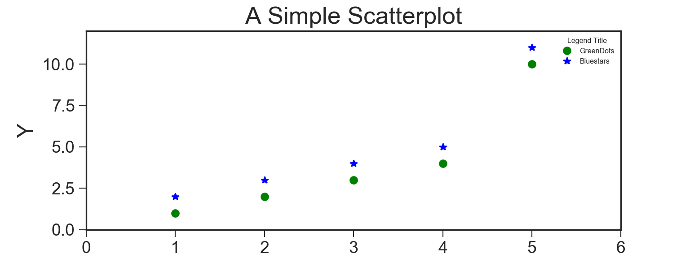
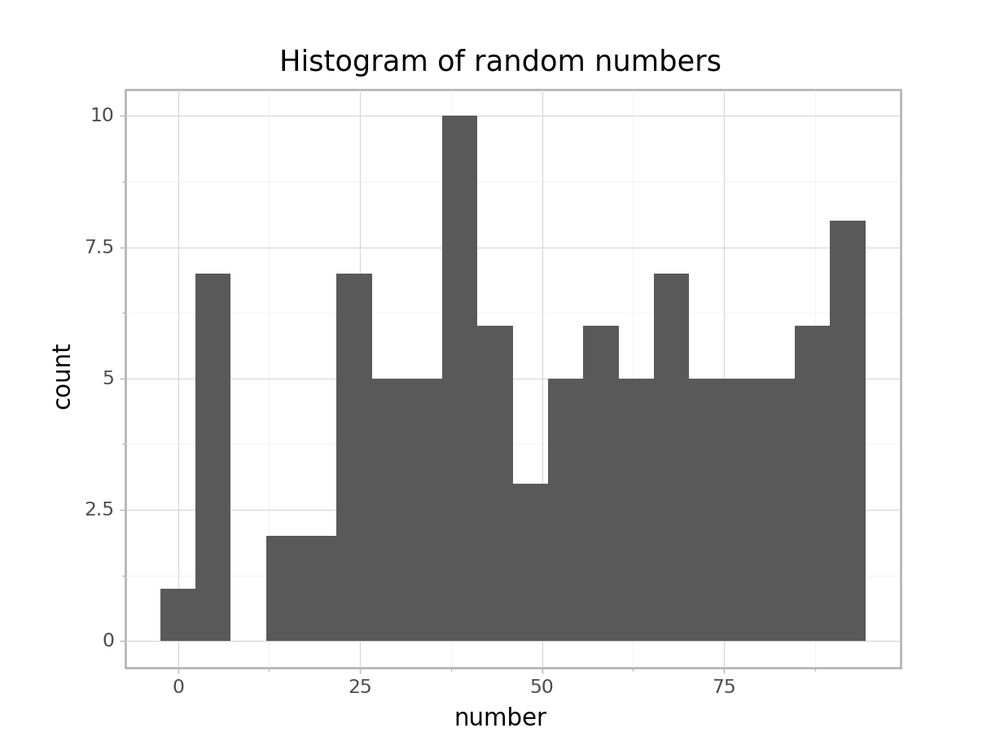

Graphing in Python - a walkthrough
Matplotlib
Create single plot
The figure object holds all subplots and other plot elements inside it. A figure object can have one or more subplots inside it called axes, arranged in rows and columns. Every figure has at least one axes. The axes objects have no relation to the x- or y-axis.
Matplotlib (version >= 1.4) has a range of styles available for the plots. Yan Holtz of the Python Graph Gallery has made a nice panel view of all of them:

## Import libraries
import matplotlib.pyplot as plt
## Set style
plt.style.use('seaborn-ticks')
## Initiate figure
fig, ax = plt.subplots(figsize=(8, 3))
## Create lot
plt.plot([1,2,3,4,5], [1,2,3,4,10], 'go', label='GreenDots') # green dots
plt.plot([1,2,3,4,5], [2,3,4,5,11], 'b*', label='Bluestars') # blue stars
## Label plot
plt.title('A Simple Scatterplot', fontsize=20)
plt.xlabel('O', fontsize=18)
plt.ylabel('Y', fontsize=18)
plt.xlim([0, 6])## (0, 6)plt.ylim([0, 12])## (0, 12)plt.tick_params(axis='both', which='major', labelsize=14)
## Legend
## 'best' prevents legend from overlapping with plot elements
#plt.legend(title='Group', loc='best', fontsize=12)
ax.legend(title="Legend Title", fontsize=6, title_fontsize=6)
## Show plot
plt.show()
Create subplots
Initiate grid
## Set up subplot grid
fig, axes = plt.subplots(nrows = 9, ncols = 2,
sharex = False, sharey = False,
figsize=(8, 15))
With a for loop
To delete a blank subplot:
fig.subplots_adjust(top=0.92, wspace=0.2, hspace=0.3)
plt.tight_layout()
fig.delaxes(axes[8][1]) Seaborn
Plotly
Plotly does not need much introduction, as it is now very widely used to create interactive plots in both Python and R.
Plotting
For a while, one major drawback of Plotly is its, in my opinion, rather inconvenient syntax, where the source data needs to be passed in as arrays even though most of us want to be able to plot data directly from dataframes. cufflinks package, which bridges pandas and Plotly, the release of Plotly Express
Styling
Plotnine
One of the strengths of the R language is its very powerful graphing package ggplot2, with its distinctive implementation of Leland Wilkinson’s Grammar of Graphics. The Plotnine package brings this (at least part of it, it seems for now) capability to Python, with very little change to the R syntax. Here is a (ever growing) collection of useful links curated by us to get your started with using Plotnine.
The brackets around the ggplot() function call looks strange at first, but it is needed for the signature multi-line ggplot2 grammer to work:
## Import libraries
import pandas as pd
from plotnine import *
from random import randint
# Generate dataset
random_numbers = [randint(1, 100) for p in range(0, 100)]
df = pd.DataFrame({'number': random_numbers})
# Draw plot
p = (
ggplot(df, aes(x='number')) +
geom_histogram(bins=20, na_rm=True) +
ggtitle('Histogram of random numbers') +
theme_light()
)
## Display plot
p.draw();
If you want to save the plot to file:
p.save("output.png")And just because I can see myself wanting to use these plots in a Streamlit app, here is a working template:
import pandas as pd
import numpy as np
from plotnine import *
import streamlit as st
n = 10
df = pd.DataFrame({'x': np.arange(n),
'y': np.arange(n),
'yfit': np.arange(n) + np.tile([-.2, .2], n // 2),
'cat': ['a', 'b'] * (n // 2)})
a = (
ggplot(df) +
geom_col(aes('x', 'y'))
)
fig = a.draw(); ## Needed to remove the "ggplot<#>" message
st.pyplot()Yellowbrick
x <- 7
y <- 9
x + y## [1] 16o = c('hello', '1', '2')
print(o)## [1] "hello" "1" "2"